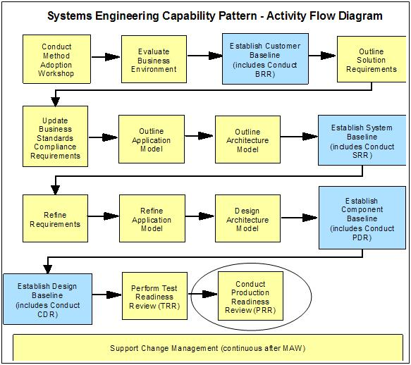
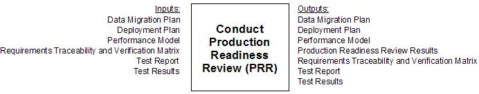
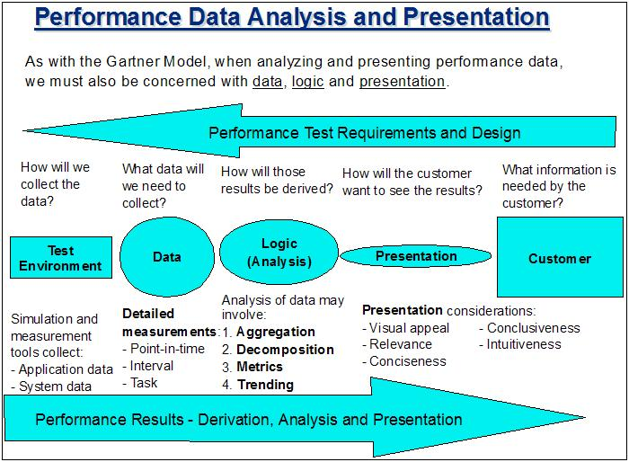

| Guideline: Performance Engineering Activities Supporting the Production Baseline |
 |
|
| Related Elements |
|---|
1 DescriptionIn an Enterprise SE&A project, the Test Baseline encompasses the release contents, test plans and implementation for the system described in the preceding baselines. Figure 1 – Production Baseline in SE Capability Pattern  In the SE Capability Pattern, a number of work products are developed before it is time to review the Production Baseline, as shown below.  The performance engineering team has a vested interest in ensuring that performance testing has confirmed the ability of the system to meet its performance requirements, and that there are no performance- or capacity-related obstacles to the system’s deployment in the production environment. Deliverables which are deemed deficient from a performance and capacity standpoint may lead to the entry of a defect, which is then taken into account during the PRR Scorecard process. The PE team should also be working with operations and performance/capacity management personnel to ensure that system performance and capacity can be managed successfully, and that performance-related service level attainment can be measured and reported on an ongoing basis. 2 Usage ContextThis technique paper should be used as guidance on applying PE activities and techniques in support of the Production Baseline Phase. 3 Content
Risk and Performance Management Focus during the Production Baseline Phase The results of performance testing will serve to validate the findings of performance engineering, and more importantly it will give a clearer, more complete picture of performance risk associated with the system. The PE team must now contribute to the process of deciding whether or not the tested system can be deployed as planned. Ultimately the decision of whether or not the system will be deployed is made by management, but the PE team and the other technical stakeholders will be responsible for advising management of any risks associated with deployment which need to be considered, and making a recommendation of what should be done. For SE&A-managed projects, the Production Readiness Review (PRR) will provide the PE team their primary opportunity to contribute to the deployment decision. Preparing for Production during the Production Baseline Phase The primary purpose of the production baseline phase is to prepare to turn the solution over to the delivery / operations team for deployment. Up to now, the PE team may already have been working with the delivery / operations team on matters such as monitoring, capacity sizing and SLAs, which should now be close to a finalized state. The PE team can continue to assist the delivery / operations team by:
Estimating Performance of the Production Solution Even after performance results are available from the test and production environments, performance estimation and modeling can still play a very important role in the future of the system. As previously discussed, the results of testing and production can be used to calibrate earlier performance models, and then the improved models can be reused to make performance and capacity projections for the future, even after deployment. Once developed, performance models can continue to serve as valuable assets for future performance and capacity management if they are well maintained and leveraged. Interacting with Test Team during the Production Baseline Phase The performance test may include multiple test scenarios and approaches, depending on what types of applications are being tested, which performance requirements are covered and what areas of performance risk are being examined. For a complex solution with many components, the combination of component-level and end-to-end performance testing may take weeks or even months to complete, between populating databases, executing test scenarios, analyzing test results, getting problems resolved as they are encountered, implementing tuning changes and other performance improvements, and reporting on the results of the test. The performance test will require the use of a variety of skills, including test environment management, performance test scripting and execution, platform-specific analysis and tuning, application-level analysis and project management. The PE team can assist in this effort by alerting the performance test teams to key performance risk areas in advance, by reviewing the test plans and cases, and by assisting with the performance problem determination and performance results analysis. It is helpful if the PE team and the performance test team uses a process such as the one shown below to select a measurement and analysis approach that supports the performance reporting needs for the task at hand.  Depending on how responsibilities are divided, the PE team and the performance test team may choose either to consolidate their respective teams’ findings or create separate reports. However this is done, the goal should be to provide the customer not only with the results of the PE and testing efforts, but with analysis, findings and recommendations which can be understood and used to make business decisions. Participating in the Production Readiness Review (PRR) In addition to reviewing the results of the performance test, the following excerpt from the Preliminary Review scorecard denotes the PRR criteria which apply to performance matters.
Below are some examples of questions that the PE team can be asking above and beyond the standard PRR scorecard criteria.
|
| © Copyright IBM Corp. 1987, 2012 All Rights Reserved Property of IBM These materials are intended only for use as part of an IBM engagement |